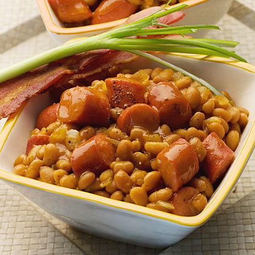

Beans and Franks

Description:
Baked beans and hot dogs, or franks as many people call them, are a natural combination. If you don't like hot dogs, make the dish with ham, spicy smoked sausage, or turkey ham. Or use chicken or turkey hot dogs. If you want to avoid the preservatives in many brands of hot dogs, choose uncured hot dogs.
Beans and hot dogs are easy on the budget as well. Some mustard, brown sugar, Worcestershire sauce, and ketchup add extra flavor. The bean casserole is slowly baked at a low temperature to bring out flavors.
Add cornbread or biscuits and a salad for a tasty family meal.
Ingredients:
- 1/2 cup coarsely chopped onion
- 1/2 cup ketchup
- 1/4 cup molasses
- 2 tablespoons brown sugar
- 1 tablespoon mustard
- 1/2 teaspoon Worcestershire sauce
- 2 (16-ounce) cans baked pork and beans in tomato sauce
- 6 hot dogs
Steps:
- Gather the ingredients. Heat the oven to 300 F.
- Mix together onion, ketchup, molasses, brown sugar, mustard, and Worcestershire sauce. Add beans and stir to blend.
- Spoon the seasoned bean mixture into a 2-quart casserole and bake for 1 1/2 to 2 hours.
- Arrange the franks on the beans and bake for 30 minutes longer.